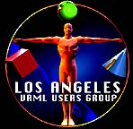

Tuesday 23 June 8pm PST
SFX, one of the creators of the VRML worlds in Colony City will have an open forum on the subject of creating multi-user worlds, how to optimize those worlds for better speed, faster downloads, what programs are available and much more...
The forum will be held at the Theater.
Thursday 2 July 7:30pm PST USA
Direct from California, the Los Angeles VRML Users Group will have their monthly meeting at the Electronic Cafe International.
You can participate to the meeting by going to the Ecafe VRML world located in the Orbit section of Colony City. The VRML world will also have live video feed of the event inside the VRML world!
Be There!!!